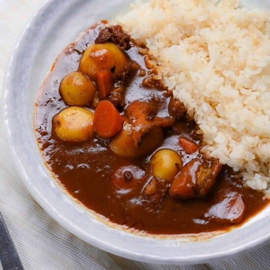

Japanese curry is a popular dish that consists of meat, vegetables, and a sauce. This recipe will teach you the
general guidlines to make japanese curry with your own meat, vegetables, and curry cubes.

Ingredients
2 lbs. of any combination of meats such as:
Chicken
Beef
Pork
Seafood
2 lbs. of any combination of fruits & vegetables such as:
Potatoes
Carrots
Onions
Bell Peppers
Apples
Water
Oil
200g of curry cubes
Tools
Large Pot
Large Spoon
Stovetop
Knife & Cutting Board
Steps
Cut all of the meats & vegetables into approximately 1-inch cubes
Add oil to the pot & stir-fry all of the meat and vegetables on medium heat for around 5 - 10 minutes
Add water to the pot until it barely covers the meat and vegetables
Set the heat of the stove to high
When the water starts boiling, set the heat to medium to start simmering
Keep simmering for around 20 minutes
Remove the pot from the heat & add in the curry cubes
Stir the pot until the curry cubes have dissolved
Put the pot back on the heat at medium-low & keep stirring for 5 minutes